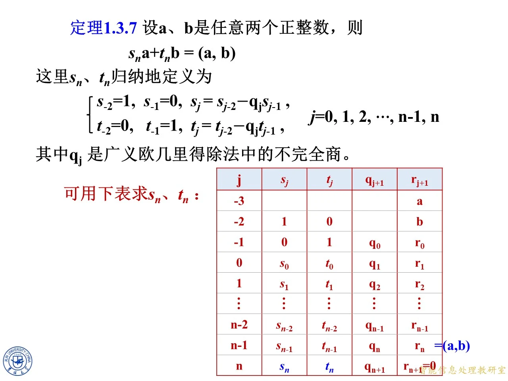
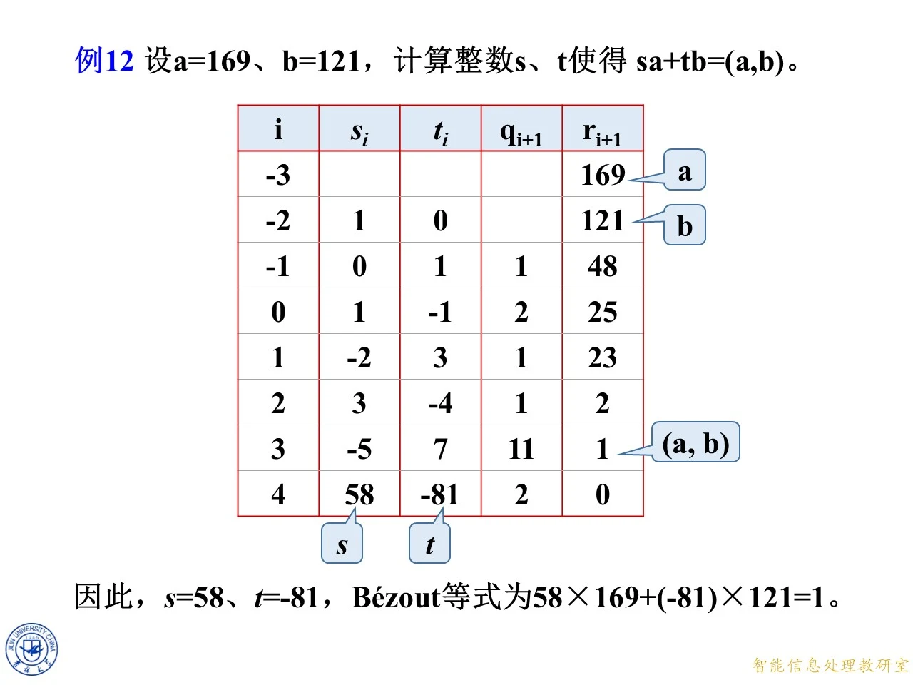
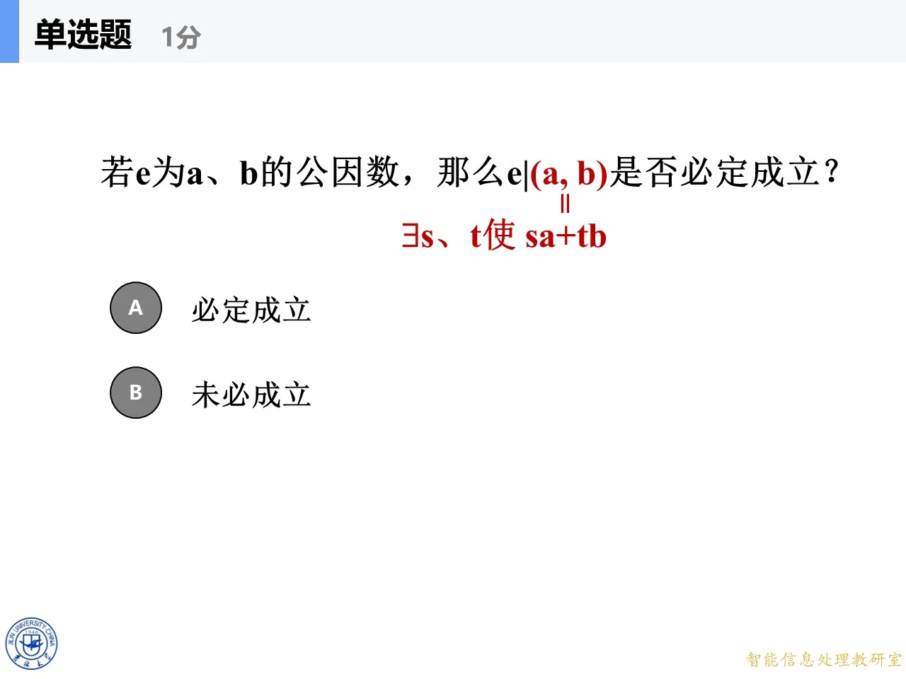

本节属于第一章第 3 节“最大公因数与 Bézout 等式”的收尾部分，讲的是扩展欧几里得算法里最不好手算的那一半：怎样不做一次次回代，就一次性把 gcd 写成两个整数的线性组合。课件先用矩阵把欧几里得除法的每一步串成一个连乘，从连乘里逼出系数的递推公式，得到定理 1.3.7 和一张只填两列系数的表格；随后用 169 与 121 的例题把表格真正填满。后半段转向 Bézout 等式的反面：等号右边能不能换成任意整数、能推出什么整除关系、互素有什么代数刻画，最后给出最大公因数的“公因数加最大性”判别定理 1.3.9。学完这一段，前面辗转相除只用来算 gcd，这里才真正把它变成能求逆元、能解一次不定方程的算法工具。
本课在清单里拼了同一份课件的三次录制：主线是 p.475-594 那一套，页码一律以它为准；另两套分别从 p.157 与 p.159 起，页码与主线恒差 318（p.157↔475、p.159↔477）。三套讲的是同一批幻灯片，所以每个主题只讲一次，只把另两套独有的推导细节、警示与例题按“另录 p.N”（指那一套自己的页码）并入对应位置。课堂上出现过两处课件瑕疵——系数表的表头与列内容整体错开一格、a a a b b b
一、先摆好除法链：这一讲到底要解决什么
◆ p.475-479 ｜1.3.4 Bézout 等式的递推求解式及其证明
设 a a a b b b r 0 = a r_0=a r 0 = a
r − 2 = a , r − 1 = b r_{-2}=a,\qquad r_{-1}=b r − 2 = a , r − 1 = b
然后反复做带余除法（课件称“广义欧几里得除法”，它的商叫不完全商）：
r − 2 = q 0 r − 1 + r 0 , r − 1 = q 1 r 0 + r 1 , r 0 = q 2 r 1 + r 2 , … , r n − 3 = q n − 1 r n − 2 + r n − 1 , r n − 2 = q n r n − 1 + r n r_{-2}=q_0r_{-1}+r_0,\quad r_{-1}=q_1r_0+r_1,\quad r_0=q_2r_1+r_2,\ \ldots,\ r_{n-3}=q_{n-1}r_{n-2}+r_{n-1},\quad r_{n-2}=q_nr_{n-1}+r_n r − 2 = q 0 r − 1 + r 0 , r − 1 = q 1 r 0 + r 1 , r 0 = q 2 r 1 + r 2 , … , r n − 3 = q n − 1 r n − 2 + r n − 1 , r n − 2 = q n r n − 1 + r n
最后一步整除：r n − 1 = q n + 1 r n r_{n-1}=q_{n+1}r_n r n − 1 = q n + 1 r n r n − 1 = q n + 1 r n + r n + 1 r_{n-1}=q_{n+1}r_n+r_{n+1} r n − 1 = q n + 1 r n + r n + 1 r n + 1 = 0 r_{n+1}=0 r n + 1 = 0 0 ≤ r i < r i − 1 0\le r_i<r_{i-1} 0 ≤ r i < r i − 1 0 < r 0 < r − 1 0<r_0<r_{-1} 0 < r 0 < r − 1 0 < r 1 < r 0 0<r_1<r_0 0 < r 1 < r 0 0 < r n < r n − 1 0<r_n<r_{n-1} 0 < r n < r n − 1
页面右侧那一列蓝色箭头做的是一个很朴素的动作：把每个等式“解出余数”，例如 r 0 = r − 2 − q 0 r − 1 r_0=r_{-2}-q_0r_{-1} r 0 = r − 2 − q 0 r − 1 r 1 = r − 1 − q 1 r 0 r_1=r_{-1}-q_1r_0 r 1 = r − 1 − q 1 r 0 r 2 = r 0 − q 2 r 1 r_2=r_0-q_2r_1 r 2 = r 0 − q 2 r 1
两件必须交代清楚的事：
为什么一定会停。 余数序列 b = r − 1 > r 0 > r 1 > ⋯ > r n − 2 > r n − 1 > r n > r n + 1 ≥ 0 b=r_{-1}>r_0>r_1>\cdots>r_{n-2}>r_{n-1}>r_n>r_{n+1}\ge 0 b = r − 1 > r 0 > r 1 > ⋯ > r n − 2 > r n − 1 > r n > r n + 1 ≥ 0 r n + 1 = 0 r_{n+1}=0 r n + 1 = 0 n n n 为什么 r n = ( a , b ) r_n=(a,b) r n = ( a , b ) 辗转相除法的核心不变量是 ( r i − 1 , r i ) = ( r i , r i + 1 ) (r_{i-1},r_i)=(r_i,r_{i+1}) ( r i − 1 , r i ) = ( r i , r i + 1 ) r i − 1 = q i + 1 r i + r i + 1 r_{i-1}=q_{i+1}r_i+r_{i+1} r i − 1 = q i + 1 r i + r i + 1 r i − 1 r_{i-1} r i − 1 r i r_i r i r i r_i r i r i + 1 r_{i+1} r i + 1 ( a , b ) = ( r − 2 , r − 1 ) = ( r − 1 , r 0 ) = ⋯ = ( r n , r n + 1 ) = ( r n , 0 ) = r n (a,b)=(r_{-2},r_{-1})=(r_{-1},r_0)=\cdots=(r_n,r_{n+1})=(r_n,0)=r_n ( a , b ) = ( r − 2 , r − 1 ) = ( r − 1 , r 0 ) = ⋯ = ( r n , r n + 1 ) = ( r n , 0 ) = r n
页脚那句“从第一个等式开始，依次代入后一等式，可得 ( a , b ) = s a + t b (a,b)=sa+tb ( a , b ) = s a + t b 回代法 ：先把 r n r_n r n r n − 2 r_{n-2} r n − 2 r n − 1 r_{n-1} r n − 1 r n − 1 r_{n-1} r n − 1 a a a b b b n n n ( a , b ) = ? a + ? b (a,b)=?a+?b ( a , b ) = ? a + ? b r n = ? a + ? b r_n=?a+?b r n = ? a + ? b r n = ( a , b ) r_n=(a,b) r n = ( a , b ) r n r_n r n
另录 p.159-160 ：另一版把这一页的总纲写得更“工程化”，先点明全节的技术核心——把每个等式解出余数，写成 r i = r i − 2 − q i r i − 1 r_i=r_{i-2}-q_ir_{i-1} r i = r i − 2 − q i r i − 1 r i r_i r i r n r_n r n a a a b b b 边界情形 ：课本写 0 < r 0 < r − 1 0<r_0<r_{-1} 0 < r 0 < r − 1 b ∤ a b\nmid a b ∤ a r 0 = 0 r_0=0 r 0 = 0 b ∣ a b\mid a b ∣ a n = 0 n=0 n = 0 r 0 = 0 r_0=0 r 0 = 0 ( a , b ) = b (a,b)=b ( a , b ) = b ( a , b ) = ? a + ? b (a,b)=?a+?b ( a , b ) = ? a + ? b
另录 p.157-161 （另一套录制，页码自 p.157 起）：负下标不是笔误 ，原因在于统一递推式的形式。若按常见的 r 0 = a r_0=a r 0 = a r 1 = b r_1=b r 1 = b r 0 = q 0 r 1 + r 2 r_0=q_0r_1+r_2 r 0 = q 0 r 1 + r 2 s j = s j − 2 − q j s j − 1 s_j=s_{j-2}-q_js_{j-1} s j = s j − 2 − q j s j − 1 j j j q j q_j q j j j j j = 0 , 1 , 2 , … , n j=0,1,2,\ldots,n j = 0 , 1 , 2 , … , n s − 2 , s − 1 s_{-2},s_{-1} s − 2 , s − 1 回代法的两个实际麻烦 说透了：一是必须把整张竖式都保留着，不能边算边丢；二是每往上一层，表达式就套一层括号，手算时长度迅速膨胀，出错后很难定位。递推法的想法正好相反——既然每个 r i r_i r i
拓展 （课件外补充）：为什么这套东西叫“扩展”欧几里得算法？普通欧几里得算法只回答“gcd 是多少”，扩展版额外回答“gcd 是哪两个数的什么组合”。后者才是密码学里天天用的东西：求模逆元、解一次同余方程、解二元一次不定方程，本质都是要那两个系数。下一章的 RSA 求私钥 d ≡ e − 1 ( m o d φ ( n ) ) d\equiv e^{-1}\pmod{\varphi(n)} d ≡ e − 1 ( mod φ ( n ))
二、把每一步除法写成一个矩阵等式
◆ p.480
课件先清屏：左侧除法链保留，右侧的箭头栏和底部结论行全部撤掉。这是一个信号——接下来不再一行行“解出余数再代入”，而是要把整条链作为一个整体来操作。屏幕上只剩 r − 2 = q 0 r − 1 + r 0 r_{-2}=q_0r_{-1}+r_0 r − 2 = q 0 r − 1 + r 0 r n − 1 = q n + 1 r n r_{n-1}=q_{n+1}r_n r n − 1 = q n + 1 r n
◆ p.481-483
对一般的一步 r j − 1 = q j + 1 r j + r j + 1 r_{j-1}=q_{j+1}r_j+r_{j+1} r j − 1 = q j + 1 r j + r j + 1 2 × 2 2\times 2 2 × 2
( r j − 1 r j ) = ( q j + 1 1 1 0 ) ( r j r j + 1 ) \begin{pmatrix}r_{j-1}\\ r_j\end{pmatrix}=\begin{pmatrix}q_{j+1}&1\\ 1&0\end{pmatrix}\begin{pmatrix}r_j\\ r_{j+1}\end{pmatrix} ( r j − 1 r j ) = ( q j + 1 1 1 0 ) ( r j r j + 1 )
逐行验算一下就知道它为什么对：矩阵第一行乘出来是 q j + 1 r j + 1 ⋅ r j + 1 = r j − 1 q_{j+1}r_j+1\cdot r_{j+1}=r_{j-1} q j + 1 r j + 1 ⋅ r j + 1 = r j − 1 1 ⋅ r j + 0 ⋅ r j + 1 = r j 1\cdot r_j+0\cdot r_{j+1}=r_j 1 ⋅ r j + 0 ⋅ r j + 1 = r j
把 j j j − 1 -1 − 1 n − 1 n-1 n − 1 j = − 1 j=-1 j = − 1 ( q 0 1 1 0 ) \begin{pmatrix}q_0&1\\1&0\end{pmatrix} ( q 0 1 1 0 ) j = 0 j=0 j = 0 ( q 1 1 1 0 ) \begin{pmatrix}q_1&1\\1&0\end{pmatrix} ( q 1 1 1 0 ) j j j ( q j + 1 1 1 0 ) \begin{pmatrix}q_{j+1}&1\\1&0\end{pmatrix} ( q j + 1 1 1 0 ) j = n − 1 j=n-1 j = n − 1 ( q n 1 1 0 ) \begin{pmatrix}q_n&1\\1&0\end{pmatrix} ( q n 1 1 0 ) r j + 1 = r n r_{j+1}=r_n r j + 1 = r n r n = ? a + ? b r_n=?a+?b r n = ? a + ? b
另录 p.161-162 ：另一个版本把这一步拆成两帧讲得更细。p.161 先把上一页的左列单独重放一遍，去掉右侧“解出余数”的形式与不等式，让版面只剩“被除数等于商乘除数加余数”这串等式；p.162 再在右侧逐行补上等价的矩阵写法，从 [ r − 2 ; r − 1 ] [r_{-2};r_{-1}] [ r − 2 ; r − 1 ] [ r n − 1 ; r n ] = ( q n + 1 1 1 0 ) [ r n ; 0 ] [r_{n-1};r_n]=\begin{pmatrix}q_{n+1}&1\\1&0\end{pmatrix}[r_n;0] [ r n − 1 ; r n ] = ( q n + 1 1 1 0 ) [ r n ; 0 ] 每个矩阵的行列式都是 q ⋅ 0 − 1 ⋅ 1 = − 1 q\cdot 0-1\cdot 1=-1 q ⋅ 0 − 1 ⋅ 1 = − 1 ，所以每个因子都可逆——这一点在后面“把乘积搬到等号另一边”时是合法性的保证。该版还给了一个连分数 视角：对 a / b a/b a / b a / b = q 0 + 1 / ( q 1 + 1 / ( q 2 + ⋯ ) ) a/b=q_0+1/(q_1+1/(q_2+\cdots)) a / b = q 0 + 1/ ( q 1 + 1/ ( q 2 + ⋯ )) q i q_i q i a / b a/b a / b q i q_i q i
◆ p.484-485
课件用一支红色箭头把第一块单独拎到左边，写成 [ r − 2 ; r − 1 ] = ( q 0 1 1 0 ) [ r − 1 ; r 0 ] [r_{-2};r_{-1}]=\begin{pmatrix}q_0&1\\1&0\end{pmatrix}[r_{-1};r_0] [ r − 2 ; r − 1 ] = ( q 0 1 1 0 ) [ r − 1 ; r 0 ] 从下往上代入 ：把第二块给出的 [ r − 1 ; r 0 ] [r_{-1};r_0] [ r − 1 ; r 0 ]
◆ p.486-491
代入的结果是
( r − 2 r − 1 ) = ( q 0 1 1 0 ) ( q 1 1 1 0 ) ( r 0 r 1 ) = ( q 0 1 1 0 ) ( q 1 1 1 0 ) ( q 2 1 1 0 ) ( r 1 r 2 ) = ⋯ \begin{pmatrix}r_{-2}\\ r_{-1}\end{pmatrix}=\begin{pmatrix}q_0&1\\1&0\end{pmatrix}\begin{pmatrix}q_1&1\\1&0\end{pmatrix}\begin{pmatrix}r_0\\ r_1\end{pmatrix}=\begin{pmatrix}q_0&1\\1&0\end{pmatrix}\begin{pmatrix}q_1&1\\1&0\end{pmatrix}\begin{pmatrix}q_2&1\\1&0\end{pmatrix}\begin{pmatrix}r_1\\ r_2\end{pmatrix}=\cdots ( r − 2 r − 1 ) = ( q 0 1 1 0 ) ( q 1 1 1 0 ) ( r 0 r 1 ) = ( q 0 1 1 0 ) ( q 1 1 1 0 ) ( q 2 1 1 0 ) ( r 1 r 2 ) = ⋯
一般位置写成
( r − 2 r − 1 ) = A 0 A 1 ⋯ A j + 1 ( r j r j + 1 ) , A k = ( q k 1 1 0 ) \begin{pmatrix}r_{-2}\\ r_{-1}\end{pmatrix}=A_0A_1\cdots A_{j+1}\begin{pmatrix}r_j\\ r_{j+1}\end{pmatrix},\qquad A_k=\begin{pmatrix}q_k&1\\1&0\end{pmatrix} ( r − 2 r − 1 ) = A 0 A 1 ⋯ A j + 1 ( r j r j + 1 ) , A k = ( q k 1 1 0 )
因子次序很关键：代入是从第一行往下走的，所以 q 0 q_0 q 0 q j + 1 q_{j+1} q j + 1 j j j
另录 p.163-171 ：另一版把这段连乘逐帧 演示了一遍，读起来比一次跳过更清楚：p.163-165 只摆第一个因子（红色箭头从右侧那串原始等式指过来，说明左上角这条就是右边那串的同一行）；p.166-167 把 [ r − 1 ; r 0 ] [r_{-1};r_0] [ r − 1 ; r 0 ] ( q 1 1 1 0 ) [ r 0 ; r 1 ] \begin{pmatrix}q_1&1\\1&0\end{pmatrix}[r_0;r_1] ( q 1 1 1 0 ) [ r 0 ; r 1 ] 意义在于中间的余数被消掉、只剩两个端点 ，手工回代要写出的一长串，被压成一个乘积，中间余数连写都不用写；p.168-169 再加第三个因子，右端点推到 [ r 1 ; r 2 ] [r_1;r_2] [ r 1 ; r 2 ] [ r − 2 ; r − 1 ] = [ a ; b ] [r_{-2};r_{-1}]=[a;b] [ r − 2 ; r − 1 ] = [ a ; b ] 顺序 ：最左边的因子对应最早那一步（q 0 q_0 q 0 r j r_j r j q j + 1 q_{j+1} q j + 1 ( q j + 1 1 1 0 ) ( r j r j + 1 ) = ( r j − 1 r j ) \begin{pmatrix}q_{j+1}&1\\1&0\end{pmatrix}\begin{pmatrix}r_j\\r_{j+1}\end{pmatrix}=\begin{pmatrix}r_{j-1}\\r_j\end{pmatrix} ( q j + 1 1 1 0 ) ( r j r j + 1 ) = ( r j − 1 r j ) 0 ≤ j ≤ n 0\le j\le n 0 ≤ j ≤ n
拓展 （课件外补充）：矩阵写法在这个问题上的价值，不在“算得快”，而在“结构清楚”。第一，它把 n n n ( q k 1 1 0 ) \begin{pmatrix}q_k&1\\1&0\end{pmatrix} ( q k 1 1 0 ) q k ⋅ 0 − 1 ⋅ 1 = − 1 q_k\cdot 0-1\cdot 1=-1 q k ⋅ 0 − 1 ⋅ 1 = − 1 ± 1 \pm 1 ± 1 a a a b b b
◆ p.492-500
现在换问题方向：a a a b b b [ r j ; r j + 1 ] [r_j;r_{j+1}] [ r j ; r j + 1 ] [ r − 2 ; r − 1 ] [r_{-2};r_{-1}] [ r − 2 ; r − 1 ] [ r − 2 ; r − 1 ] [r_{-2};r_{-1}] [ r − 2 ; r − 1 ] [ r j ; r j + 1 ] [r_j;r_{j+1}] [ r j ; r j + 1 ]
det ( q j + 1 1 1 0 ) = q j + 1 ⋅ 0 − 1 ⋅ 1 = − 1 , ( q j + 1 1 1 0 ) − 1 = ( 0 1 1 − q j + 1 ) \det\begin{pmatrix}q_{j+1}&1\\1&0\end{pmatrix}=q_{j+1}\cdot 0-1\cdot 1=-1,\qquad \begin{pmatrix}q_{j+1}&1\\1&0\end{pmatrix}^{-1}=\begin{pmatrix}0&1\\1&-q_{j+1}\end{pmatrix} det ( q j + 1 1 1 0 ) = q j + 1 ⋅ 0 − 1 ⋅ 1 = − 1 , ( q j + 1 1 1 0 ) − 1 = ( 0 1 1 − q j + 1 )
算法是二阶矩阵的通用求逆公式“主对角互换、副对角变号、再除以行列式”：先得 ( 0 − 1 − 1 q j + 1 ) \begin{pmatrix}0&-1\\-1&q_{j+1}\end{pmatrix} ( 0 − 1 − 1 q j + 1 ) − 1 -1 − 1
( r j r j + 1 ) = ( 0 1 1 − q j + 1 ) ⋯ ( 0 1 1 − q 2 ) ( 0 1 1 − q 1 ) ( 0 1 1 − q 0 ) ( r − 2 r − 1 ) \begin{pmatrix}r_j\\ r_{j+1}\end{pmatrix}=\begin{pmatrix}0&1\\1&-q_{j+1}\end{pmatrix}\cdots\begin{pmatrix}0&1\\1&-q_2\end{pmatrix}\begin{pmatrix}0&1\\1&-q_1\end{pmatrix}\begin{pmatrix}0&1\\1&-q_0\end{pmatrix}\begin{pmatrix}r_{-2}\\ r_{-1}\end{pmatrix} ( r j r j + 1 ) = ( 0 1 1 − q j + 1 ) ⋯ ( 0 1 1 − q 2 ) ( 0 1 1 − q 1 ) ( 0 1 1 − q 0 ) ( r − 2 r − 1 )
请盯住这里的次序：q j + 1 q_{j+1} q j + 1 q 0 q_0 q 0 这个颠倒正是后面公式里 s j s_j s j q j q_j q j q j + 1 q_{j+1} q j + 1 ，很多同学背公式时觉得下标“错位”，其实是被这个反转带出来的。
另录 p.172-180 ：另一版把“求逆”这一步的动机与细节都摊开了。p.172-173 先画出待求的 [ r j ; r j + 1 ] = [r_j;r_{j+1}]= [ r j ; r j + 1 ] = a a a b b b [ r − 2 ; r − 1 ] [r_{-2};r_{-1}] [ r − 2 ; r − 1 ] a a a b b b j j j ( q 0 1 1 0 ) ⋯ ( q j + 1 1 1 0 ) \begin{pmatrix}q_0&1\\1&0\end{pmatrix}\cdots\begin{pmatrix}q_{j+1}&1\\1&0\end{pmatrix} ( q 0 1 1 0 ) ⋯ ( q j + 1 1 1 0 ) q j + 1 q_{j+1} q j + 1 q 0 q_0 q 0
( q 1 1 0 ) ( 0 1 1 − q ) = ( q ⋅ 0 + 1 ⋅ 1 q ⋅ 1 + 1 ⋅ ( − q ) 1 ⋅ 0 + 0 ⋅ 1 1 ⋅ 1 + 0 ⋅ ( − q ) ) = ( 1 0 0 1 ) \begin{pmatrix} q & 1\\ 1 & 0\end{pmatrix}\begin{pmatrix} 0 & 1\\ 1 & -q\end{pmatrix}=\begin{pmatrix} q\cdot 0+1\cdot 1 & q\cdot 1+1\cdot(-q)\\ 1\cdot 0+0\cdot 1 & 1\cdot 1+0\cdot(-q)\end{pmatrix}=\begin{pmatrix} 1 & 0\\ 0 & 1\end{pmatrix} ( q 1 1 0 ) ( 0 1 1 − q ) = ( q ⋅ 0 + 1 ⋅ 1 1 ⋅ 0 + 0 ⋅ 1 q ⋅ 1 + 1 ⋅ ( − q ) 1 ⋅ 1 + 0 ⋅ ( − q ) ) = ( 1 0 0 1 )
逆矩阵里出现 − q -q − q ——例 12 里 t = − 81 t=-81 t = − 81 q j + 1 q_{j+1} q j + 1 a a a b b b q i q_i q i j j j 第一行就是 r j r_j r j a a a b b b r j + 1 r_{j+1} r j + 1 。
另录 p.166-177 （第三套录制）：这里补了一条更根本的理由——二阶矩阵 ( p q r s ) \begin{pmatrix}p&q\\ r&s\end{pmatrix} ( p r q s ) 1 p s − q r ( s − q − r p ) \frac{1}{ps-qr}\begin{pmatrix}s&-q\\ -r&p\end{pmatrix} p s − q r 1 ( s − r − q p ) det M k = ± 1 \det M_k=\pm1 det M k = ± 1 分母为 ± 1 \pm1 ± 1 。这是“系数是整数”这件事在矩阵层面的保证，比事后再验算更直接。该版还标明了矩阵的方向感：等式左边是较靠前的余数对、右边是较靠后的余数对，所以这个矩阵的作用是“从后往前还原”，要顺着算法走就得反过来用；而 ( A B C ) − 1 = C − 1 B − 1 A − 1 (ABC)^{-1}=C^{-1}B^{-1}A^{-1} ( A BC ) − 1 = C − 1 B − 1 A − 1 M j − 1 M_j^{-1} M j − 1 M 0 , M 1 , M 2 , … , M j M_0,M_1,M_2,\ldots,M_j M 0 , M 1 , M 2 , … , M j ( 0 1 1 − q ) \begin{pmatrix}0&1\\1&-q\end{pmatrix} ( 0 1 1 − q )
◆ p.501-508
把这一长串乘积整体命名：
( s j t j u j v j ) : = ( 0 1 1 − q j + 1 ) ⋯ ( 0 1 1 − q 0 ) \begin{pmatrix}s_j&t_j\\ u_j&v_j\end{pmatrix}:=\begin{pmatrix}0&1\\1&-q_{j+1}\end{pmatrix}\cdots\begin{pmatrix}0&1\\1&-q_0\end{pmatrix} ( s j u j t j v j ) := ( 0 1 1 − q j + 1 ) ⋯ ( 0 1 1 − q 0 )
则
( r j r j + 1 ) = ( s j t j u j v j ) ( a b ) \begin{pmatrix}r_j\\ r_{j+1}\end{pmatrix}=\begin{pmatrix}s_j&t_j\\ u_j&v_j\end{pmatrix}\begin{pmatrix}a\\ b\end{pmatrix} ( r j r j + 1 ) = ( s j u j t j v j ) ( a b )
乘开看第一行：r j = s j a + t j b r_j=s_ja+t_jb r j = s j a + t j b r j r_j r j a a a b b b s j s_j s j t j t_j t j r j + 1 = u j a + v j b r_{j+1}=u_ja+v_jb r j + 1 = u j a + v j b
另录 p.181-182 ：另一版在这里补充了两点。其一，命名之后上一页的式子可以简写成
( r j r j + 1 ) = ( s j t j u j v j ) ( r − 2 r − 1 ) = ( s j a + t j b u j a + v j b ) \begin{pmatrix} r_j\\ r_{j+1}\end{pmatrix}=\begin{pmatrix} s_j & t_j\\ u_j & v_j\end{pmatrix}\begin{pmatrix} r_{-2}\\ r_{-1}\end{pmatrix}=\begin{pmatrix} s_ja+t_jb\\ u_ja+v_jb\end{pmatrix} ( r j r j + 1 ) = ( s j u j t j v j ) ( r − 2 r − 1 ) = ( s j a + t j b u j a + v j b )
而我们要的正是最后一行的 s n s_n s n t n t_n t n ：r n = ( a , b ) = s n a + t n b r_n=(a,b)=s_na+t_nb r n = ( a , b ) = s n a + t n b 2 × 2 2\times2 2 × 2 j − 1 j-1 j − 1 j j j j − 1 j-1 j − 1
另录 p.178-182 （第三套录制）：第二行不是废料。由 [ r j ; r j + 1 ] = P j [ a ; b ] [r_j;r_{j+1}]=P_j[a;b] [ r j ; r j + 1 ] = P j [ a ; b ] r j + 1 = u j a + v j b r_{j+1}=u_ja+v_jb r j + 1 = u j a + v j b u j , v j u_j,v_j u j , v j r j + 1 r_{j+1} r j + 1 u j = s j + 1 u_j=s_{j+1} u j = s j + 1 v j = t j + 1 v_j=t_{j+1} v j = t j + 1 P j + 1 = M j + 1 − 1 P j P_{j+1}=M_{j+1}^{-1}P_j P j + 1 = M j + 1 − 1 P j M j + 1 − 1 M_{j+1}^{-1} M j + 1 − 1 ( 0 , 1 ) (0,1) ( 0 , 1 ) P j P_j P j s j = u j − 1 s_j=u_{j-1} s j = u j − 1 det P j = ( det M j − 1 ) ⋯ ( det M 0 − 1 ) = ± 1 \det P_j=(\det M_j^{-1})\cdots(\det M_0^{-1})=\pm1 det P j = ( det M j − 1 ) ⋯ ( det M 0 − 1 ) = ± 1
◆ p.509-513
用递推关系去算这四个格子。因为 ( s j t j u j v j ) = ( 0 1 1 − q j + 1 ) ( s j − 1 t j − 1 u j − 1 v j − 1 ) \begin{pmatrix}s_j&t_j\\u_j&v_j\end{pmatrix}=\begin{pmatrix}0&1\\1&-q_{j+1}\end{pmatrix}\begin{pmatrix}s_{j-1}&t_{j-1}\\u_{j-1}&v_{j-1}\end{pmatrix} ( s j u j t j v j ) = ( 0 1 1 − q j + 1 ) ( s j − 1 u j − 1 t j − 1 v j − 1 ) ( u j − 1 , v j − 1 ) (u_{j-1},\,v_{j-1}) ( u j − 1 , v j − 1 ) ( s j − 1 − q j + 1 u j − 1 , t j − 1 − q j + 1 v j − 1 ) (s_{j-1}-q_{j+1}u_{j-1},\,t_{j-1}-q_{j+1}v_{j-1}) ( s j − 1 − q j + 1 u j − 1 , t j − 1 − q j + 1 v j − 1 )
s j = u j − 1 , t j = v j − 1 , u j = s j − 1 − q j + 1 u j − 1 , v j = t j − 1 − q j + 1 v j − 1 s_j=u_{j-1},\qquad t_j=v_{j-1},\qquad u_j=s_{j-1}-q_{j+1}u_{j-1},\qquad v_j=t_{j-1}-q_{j+1}v_{j-1} s j = u j − 1 , t j = v j − 1 , u j = s j − 1 − q j + 1 u j − 1 , v j = t j − 1 − q j + 1 v j − 1
另录 p.183-188 ：另一版把这一步称作“全节的枢纽”，并把矩阵动作讲成一句话：左边乘一个第一行是 ( 0 , 1 ) (0,1) ( 0 , 1 ) ( 1 , − q j + 1 ) (1,-q_{j+1}) ( 1 , − q j + 1 ) q j + 1 q_{j+1} q j + 1
( s j t j u j v j ) = ( u j − 1 v j − 1 s j − 1 − q j + 1 u j − 1 t j − 1 − q j + 1 v j − 1 ) \begin{pmatrix}s_j&t_j\\ u_j&v_j\end{pmatrix}=\begin{pmatrix}u_{j-1}&v_{j-1}\\ s_{j-1}-q_{j+1}u_{j-1}&t_{j-1}-q_{j+1}v_{j-1}\end{pmatrix} ( s j u j t j v j ) = ( u j − 1 s j − 1 − q j + 1 u j − 1 v j − 1 t j − 1 − q j + 1 v j − 1 )
第一行等于旧矩阵第二行，第二行等于“旧第一行减去 q j + 1 q_{j+1} q j + 1 s j = , t j = , u j = , v j = s_j=,t_j=,u_j=,v_j= s j = , t j = , u j = , v j = s j = u j − 1 s_j=u_{j-1} s j = u j − 1 j j j j − 1 j-1 j − 1 s s s t t t u u u v v v
◆ p.514-518 ｜把 u u u v v v
现在把 u u u v v v u u u s s s s j = u j − 1 s_j=u_{j-1} s j = u j − 1 s j − 1 = u j − 2 s_{j-1}=u_{j-2} s j − 1 = u j − 2 u j − 1 u_{j-1} u j − 1
u j − 1 = s j − 2 − q j u j − 2 = s j − 2 − q j s j − 1 ⟹ s j = s j − 2 − q j s j − 1 u_{j-1}=s_{j-2}-q_j u_{j-2}=s_{j-2}-q_js_{j-1}\ \Longrightarrow\ s_j=s_{j-2}-q_js_{j-1} u j − 1 = s j − 2 − q j u j − 2 = s j − 2 − q j s j − 1 ⟹ s j = s j − 2 − q j s j − 1
注意中间这一步用的商是 q j q_j q j u j − 1 u_{j-1} u j − 1 j j j t j = v j − 1 t_j=v_{j-1} t j = v j − 1 v j − 1 = t j − 2 − q j v j − 2 = t j − 2 − q j t j − 1 v_{j-1}=t_{j-2}-q_jv_{j-2}=t_{j-2}-q_jt_{j-1} v j − 1 = t j − 2 − q j v j − 2 = t j − 2 − q j t j − 1
t j = t j − 2 − q j t j − 1 t_j=t_{j-2}-q_jt_{j-1} t j = t j − 2 − q j t j − 1
至此，四个格子缩成两列：s s s t t t u u u v v v
另录 p.189-197 ：另一版把“两列并排算”说得更明白：由 v j = t j − 1 − q j + 1 v j − 1 v_j=t_{j-1}-q_{j+1}v_{j-1} v j = t j − 1 − q j + 1 v j − 1 v j − 1 = t j − 2 − q j v j − 2 v_{j-1}=t_{j-2}-q_jv_{j-2} v j − 1 = t j − 2 − q j v j − 2 t j = v j − 1 t_j=v_{j-1} t j = v j − 1 v j − 2 = t j − 1 v_{j-2}=t_{j-1} v j − 2 = t j − 1 v j − 1 = t j − 2 − q j t j − 1 v_{j-1}=t_{j-2}-q_jt_{j-1} v j − 1 = t j − 2 − q j t j − 1 s s s s s s t t t s s s t t t 同一个递推、两组初值 。它还给了一条比矩阵更短的验算路（直接比较系数 ）：
r j = r j − 2 − q j r j − 1 = ( s j − 2 a + t j − 2 b ) − q j ( s j − 1 a + t j − 1 b ) r_j=r_{j-2}-q_jr_{j-1}=(s_{j-2}a+t_{j-2}b)-q_j(s_{j-1}a+t_{j-1}b) r j = r j − 2 − q j r j − 1 = ( s j − 2 a + t j − 2 b ) − q j ( s j − 1 a + t j − 1 b )
按 a a a b b b s j − 2 − q j s j − 1 s_{j-2}-q_js_{j-1} s j − 2 − q j s j − 1 t j − 2 − q j t j − 1 t_{j-2}-q_jt_{j-1} t j − 2 − q j t j − 1 s j s_j s j j j j a a a r j = r j − 2 − q j r j − 1 r_j=r_{j-2}-q_jr_{j-1} r j = r j − 2 − q j r j − 1 u , v u,v u , v
◆ p.519-526
递推式要能启动，得给边界。取 j = − 2 j=-2 j = − 2 j + 1 = − 1 j+1=-1 j + 1 = − 1 0 0 0 空乘积按惯例等于单位矩阵 ，于是
( s − 2 t − 2 s − 1 t − 1 ) = ( 1 0 0 1 ) \begin{pmatrix}s_{-2}&t_{-2}\\ s_{-1}&t_{-1}\end{pmatrix}=\begin{pmatrix}1&0\\0&1\end{pmatrix} ( s − 2 s − 1 t − 2 t − 1 ) = ( 1 0 0 1 )
即 s − 2 = 1 s_{-2}=1 s − 2 = 1 t − 2 = 0 t_{-2}=0 t − 2 = 0 s − 1 = 0 s_{-1}=0 s − 1 = 0 t − 1 = 1 t_{-1}=1 t − 1 = 1 r − 2 = a = 1 ⋅ a + 0 ⋅ b r_{-2}=a=1\cdot a+0\cdot b r − 2 = a = 1 ⋅ a + 0 ⋅ b r − 1 = b = 0 ⋅ a + 1 ⋅ b r_{-1}=b=0\cdot a+1\cdot b r − 1 = b = 0 ⋅ a + 1 ⋅ b a a a a a a b b b b b b
有了边界就能一路推到 j = n j=n j = n r n = s n a + t n b r_n=s_na+t_nb r n = s n a + t n b r n = ( a , b ) r_n=(a,b) r n = ( a , b )
( a , b ) = s n a + t n b (a,b)=s_na+t_nb ( a , b ) = s n a + t n b
起点页上的问号，到这里被彻底填上。课件最后几帧把 [ r j ; r j + 1 ] [r_j;r_{j+1}] [ r j ; r j + 1 ] [ r − 2 ; r − 1 ] [r_{-2};r_{-1}] [ r − 2 ; r − 1 ] s n s_n s n t n t_n t n 边界 + 递推 + 最后一格 = Bézout 等式 。
另录 p.196-201 ：另一版把边界的“问号帧”保留得很完整：先画一个“递推边界”方框、只写一个问号 ( s − 2 t − 2 u − 2 v − 2 ) = ( ? ) \begin{pmatrix}s_{-2}&t_{-2}\\u_{-2}&v_{-2}\end{pmatrix}=(?) ( s − 2 u − 2 t − 2 v − 2 ) = ( ?) s j a + t j b = r j s_ja+t_jb=r_j s j a + t j b = r j r − 2 = a r_{-2}=a r − 2 = a ( 1 , 0 ) (1,0) ( 1 , 0 ) r − 1 = b r_{-1}=b r − 1 = b ( 0 , 1 ) (0,1) ( 0 , 1 ) s , t s,t s , t ( s − 2 t − 2 s − 1 t − 1 ) = ( 1 0 0 1 ) \begin{pmatrix}s_{-2}&t_{-2}\\s_{-1}&t_{-1}\end{pmatrix}=\begin{pmatrix}1&0\\0&1\end{pmatrix} ( s − 2 s − 1 t − 2 t − 1 ) = ( 1 0 0 1 ) s − 1 , t − 1 s_{-1},t_{-1} s − 1 , t − 1 u − 2 , v − 2 u_{-2},v_{-2} u − 2 , v − 2 s − 1 , t − 1 s_{-1},t_{-1} s − 1 , t − 1 j = 0 j=0 j = 0 j = 0 j=0 j = 0 s 0 = 1 − q 0 ⋅ 0 = 1 s_0=1-q_0\cdot 0=1 s 0 = 1 − q 0 ⋅ 0 = 1 t 0 = 0 − q 0 ⋅ 1 = − q 0 t_0=0-q_0\cdot 1=-q_0 t 0 = 0 − q 0 ⋅ 1 = − q 0 s 0 a + t 0 b = a − q 0 b = r 0 s_0a+t_0b=a-q_0b=r_0 s 0 a + t 0 b = a − q 0 b = r 0
拓展 （课件外补充）：整段推导其实还可以用更省事的方式重述，就是抓不变量 r j = s j a + t j b r_j=s_ja+t_jb r j = s j a + t j b j = − 2 , − 1 j=-2,-1 j = − 2 , − 1 r j − 2 = s j − 2 a + t j − 2 b r_{j-2}=s_{j-2}a+t_{j-2}b r j − 2 = s j − 2 a + t j − 2 b r j − 1 = s j − 1 a + t j − 1 b r_{j-1}=s_{j-1}a+t_{j-1}b r j − 1 = s j − 1 a + t j − 1 b r j = r j − 2 − q j r j − 1 = ( s j − 2 − q j s j − 1 ) a + ( t j − 2 − q j t j − 1 ) b r_j=r_{j-2}-q_jr_{j-1}=(s_{j-2}-q_js_{j-1})a+(t_{j-2}-q_jt_{j-1})b r j = r j − 2 − q j r j − 1 = ( s j − 2 − q j s j − 1 ) a + ( t j − 2 − q j t j − 1 ) b
三、定理 1.3.7 与它的计算表格
◆ p.527-530 ｜定理 1.3.7（系数递推）
把上一段的结果正式写成定理：设 a a a b b b s n a + t n b = ( a , b ) s_na+t_nb=(a,b) s n a + t n b = ( a , b ) 这里 s n s_n s n t n t_n t n
s − 2 = 1 , s − 1 = 0 , s j = s j − 2 − q j s j − 1 s_{-2}=1,\quad s_{-1}=0,\quad s_j=s_{j-2}-q_js_{j-1} s − 2 = 1 , s − 1 = 0 , s j = s j − 2 − q j s j − 1
t − 2 = 0 , t − 1 = 1 , t j = t j − 2 − q j t j − 1 ( j = 0 , 1 , 2 , … , n − 1 , n ) t_{-2}=0,\quad t_{-1}=1,\quad t_j=t_{j-2}-q_jt_{j-1}\qquad (j=0,1,2,\ldots,n-1,n) t − 2 = 0 , t − 1 = 1 , t j = t j − 2 − q j t j − 1 ( j = 0 , 1 , 2 , … , n − 1 , n )
其中 q j q_j q j
读这个定理要抓住三点。第一，s s s t t t 同一套递推形状 ，只是初值不同，所以算的时候两列可以并排走，不必分开想。第二，每一格只依赖“同列前两格”和“本步的商”，是一阶记忆的滑动窗口，手工算与写程序都只需两个临时变量。第三，q j q_j q j 0 0 0 n n n j = n j=n j = n q n q_n q n q n + 1 q_{n+1} q n + 1
另录 p.202-203 ：另一版在定理旁边直接摆出“可用下表求 s n s_n s n t n t_n t n j j j s j s_j s j t j t_j t j q j + 1 q_{j+1} q j + 1 r j + 1 r_{j+1} r j + 1 − 3 -3 − 3 n n n 表头里 q q q r r r j + 1 j+1 j + 1 j j j ，这是本表最容易让人错位一格的设计，下一页填表时会被具体数字暴露出来。它给出的证明路线也值得记住：先证 r j = s j a + t j b r_j=s_ja+t_jb r j = s j a + t j b j j j j j j j = n j=n j = n r n = ( a , b ) r_n=(a,b) r n = ( a , b )
◆ p.531-538 ｜表格的列与填法
课件把定理做成一张表，列为 j j j s j s_j s j t j t_j t j q j + 1 q_{j+1} q j + 1 r j + 1 r_{j+1} r j + 1 j = − 3 , − 2 , − 1 , 0 , 1 , … , n − 2 , n − 1 , n j=-3,-2,-1,0,1,\ldots,n-2,n-1,n j = − 3 , − 2 , − 1 , 0 , 1 , … , n − 2 , n − 1 , n
r j + 1 r_{j+1} r j + 1 − 3 -3 − 3 a a a r − 2 r_{-2} r − 2 − 2 -2 − 2 b b b r − 1 r_{-1} r − 1 − 1 -1 − 1 r 0 r_0 r 0 0 0 0 r 1 r_1 r 1 n − 1 n-1 n − 1 r n r_n r n ( a , b ) (a,b) ( a , b ) n n n r n + 1 = 0 r_{n+1}=0 r n + 1 = 0 s s s t t t − 2 -2 − 2 ( 1 , 0 ) (1,0) ( 1 , 0 ) − 1 -1 − 1 ( 0 , 1 ) (0,1) ( 0 , 1 ) 0 0 0 q j + 1 q_{j+1} q j + 1 − 1 -1 − 1 q 0 q_0 q 0 0 0 0 q 1 q_1 q 1 1 1 1 q 2 q_2 q 2 n n n q n + 1 q_{n+1} q n + 1
填表的唯一规则 ：第 i i i q i + 1 q_{i+1} q i + 1 下一行 （即第 i + 1 i+1 i + 1
r i + 1 = r i − 1 − q i + 1 r i , s i + 1 = s i − 1 − q i + 1 s i , t i + 1 = t i − 1 − q i + 1 t i r_{i+1}=r_{i-1}-q_{i+1}r_i,\qquad s_{i+1}=s_{i-1}-q_{i+1}s_i,\qquad t_{i+1}=t_{i-1}-q_{i+1}t_i r i + 1 = r i − 1 − q i + 1 r i , s i + 1 = s i − 1 − q i + 1 s i , t i + 1 = t i − 1 − q i + 1 t i
三者形式完全一样，都是“隔一行减去商乘上一行”。所以填表时手上只需要两行：商来自本行，被减数是上上行，减数是上一行。第三套录制把这条规矩概括成“一行管三件事”：q i + 1 q_{i+1} q i + 1 r i + 1 r_{i+1} r i + 1 s i s_i s i t i t_i t i r i r_i r i q i q_i q i j = − 3 j=-3 j = − 3 − 2 -2 − 2 a a a b b b j = − 1 j=-1 j = − 1
课件瑕疵：表头与列内容整体错开一格。 这张表看起来“错开了一行”——第 i i i s i s_i s i t i t_i t i r i r_i r i r r r r i + 1 r_{i+1} r i + 1 r i + 1 r_{i+1} r i + 1 s i s_i s i r i r_i r i ( a , b ) (a,b) ( a , b ) j = n − 1 j=n-1 j = n − 1 r r r r j + 1 r_{j+1} r j + 1 j j j r n r_n r n j = n − 1 j=n-1 j = n − 1 s n , t n s_n,t_n s n , t n 最后一行 （j = n j=n j = n q q q q n + 1 q_{n+1} q n + 1 r r r r n + 1 = 0 r_{n+1}=0 r n + 1 = 0 算第 i i i q i q_i q i q q q q i + 1 q_{i+1} q i + 1 ——第三套录制把这一点单列为“最容易失分的地方”：i = 4 i=4 i = 4 q 4 = 11 q_4=11 q 4 = 11 11 11 11 i = 3 i=3 i = 3 q i + 1 q_{i+1} q i + 1 s i a + t i b = r i s_ia+t_ib=r_i s i a + t i b = r i r r r
另录 p.204-208 ：另一版把“一格一格填”的过程写成了可核对的清单。j = − 3 j=-3 j = − 3 r − 2 = a r_{-2}=a r − 2 = a j = − 2 j=-2 j = − 2 r − 1 = b r_{-1}=b r − 1 = b s − 2 = 1 s_{-2}=1 s − 2 = 1 t − 2 = 0 t_{-2}=0 t − 2 = 0 j = − 1 j=-1 j = − 1 q 0 q_0 q 0 r 0 r_0 r 0 s − 1 = 0 s_{-1}=0 s − 1 = 0 t − 1 = 1 t_{-1}=1 t − 1 = 1 j = 0 j=0 j = 0 s 0 = s − 2 − q 0 s − 1 = 1 − q 0 ⋅ 0 = 1 s_0=s_{-2}-q_0s_{-1}=1-q_0\cdot 0=1 s 0 = s − 2 − q 0 s − 1 = 1 − q 0 ⋅ 0 = 1 t 0 = t − 2 − q 0 t − 1 = 0 − q 0 ⋅ 1 = − q 0 t_0=t_{-2}-q_0t_{-1}=0-q_0\cdot 1=-q_0 t 0 = t − 2 − q 0 t − 1 = 0 − q 0 ⋅ 1 = − q 0 j = 1 j=1 j = 1 s 1 = s − 1 − q 1 s 0 = − q 1 s_1=s_{-1}-q_1s_0=-q_1 s 1 = s − 1 − q 1 s 0 = − q 1 t 1 = t − 1 − q 1 t 0 = 1 + q 1 q 0 t_1=t_{-1}-q_1t_0=1+q_1q_0 t 1 = t − 1 − q 1 t 0 = 1 + q 1 q 0 j = n − 1 j=n-1 j = n − 1 s n − 1 = s n − 3 − q n − 1 s n − 2 s_{n-1}=s_{n-3}-q_{n-1}s_{n-2} s n − 1 = s n − 3 − q n − 1 s n − 2 t n − 1 = t n − 3 − q n − 1 t n − 2 t_{n-1}=t_{n-3}-q_{n-1}t_{n-2} t n − 1 = t n − 3 − q n − 1 t n − 2 j = n j=n j = n s n = s n − 2 − q n s n − 1 s_n=s_{n-2}-q_ns_{n-1} s n = s n − 2 − q n s n − 1 t n = t n − 2 − q n t n − 1 t_n=t_{n-2}-q_nt_{n-1} t n = t n − 2 − q n t n − 1 s n , t n s_n,t_n s n , t n r n = ? a + ? b r_n=?a+?b r n = ? a + ? b a a a b b b q 0 , r 0 q_0,r_0 q 0 , r 0 q n + 1 , r n + 1 = 0 q_{n+1},r_{n+1}=0 q n + 1 , r n + 1 = 0 r n r_n r n = ( a , b ) =(a,b) = ( a , b ) 另录 p.209-216 是同一张幻灯片的重播 （定理陈述、表头、边界值、错位一格的构造与 p.202-208 完全一致，只讲一次），差异仅在揭示顺序：第二遍先亮 j = − 2 j=-2 j = − 2 j = − 1 j=-1 j = − 1 j = n − 2 , n − 1 , n j=n-2,n-1,n j = n − 2 , n − 1 , n ( a , b ) (a,b) ( a , b ) s n , t n s_n,t_n s n , t n
拓展 （课件外补充）：课件只用矩阵推出了递推式，并没有把“s n a + t n b = r n s_na+t_nb=r_n s n a + t n b = r n j = − 2 , − 1 , 0 , … , n j=-2,-1,0,\dots,n j = − 2 , − 1 , 0 , … , n s j a + t j b = r j s_ja+t_jb=r_j s j a + t j b = r j j = − 2 j=-2 j = − 2 1 ⋅ a + 0 ⋅ b = a = r − 2 1\cdot a+0\cdot b=a=r_{-2} 1 ⋅ a + 0 ⋅ b = a = r − 2 j = − 1 j=-1 j = − 1 0 ⋅ a + 1 ⋅ b = b = r − 1 0\cdot a+1\cdot b=b=r_{-1} 0 ⋅ a + 1 ⋅ b = b = r − 1 j − 2 j-2 j − 2 j − 1 j-1 j − 1 j ≥ 0 j\ge 0 j ≥ 0
s j a + t j b = ( s j − 2 − q j s j − 1 ) a + ( t j − 2 − q j t j − 1 ) b = ( s j − 2 a + t j − 2 b ) − q j ( s j − 1 a + t j − 1 b ) = r j − 2 − q j r j − 1 s_ja+t_jb=(s_{j-2}-q_js_{j-1})a+(t_{j-2}-q_jt_{j-1})b=(s_{j-2}a+t_{j-2}b)-q_j(s_{j-1}a+t_{j-1}b)=r_{j-2}-q_jr_{j-1} s j a + t j b = ( s j − 2 − q j s j − 1 ) a + ( t j − 2 − q j t j − 1 ) b = ( s j − 2 a + t j − 2 b ) − q j ( s j − 1 a + t j − 1 b ) = r j − 2 − q j r j − 1
最后一步用了归纳假设；而第 j j j r j − 2 = q j r j − 1 + r j r_{j-2}=q_jr_{j-1}+r_j r j − 2 = q j r j − 1 + r j r j = r j − 2 − q j r j − 1 r_j=r_{j-2}-q_jr_{j-1} r j = r j − 2 − q j r j − 1 s j a + t j b = r j s_ja+t_jb=r_j s j a + t j b = r j j = n j=n j = n r n = ( a , b ) r_n=(a,b) r n = ( a , b ) s n a + t n b = ( a , b ) s_na+t_nb=(a,b) s n a + t n b = ( a , b ) r j − 2 − q j r j − 1 r_{j-2}-q_jr_{j-1} r j − 2 − q j r j − 1
拓展 （课件外补充）：从矩阵视角还能直接读出复杂度。填一行只做两次乘减，“一次乘一步”意味着第 j j j j − 1 j-1 j − 1 n n n log φ b \log_{\varphi}b log φ b O ( log b ) O(\log b) O ( log b )

课件原图 · 9月9日授课 · 第 538 页 查看前后已收录原页 → 四、例 12：求 s s s t t t s a + t b = ( a , b ) sa+tb=(a,b) s a + t b = ( a , b )
◆ p.539-543 ｜a = 169 a=169 a = 169 b = 121 b=121 b = 121
题目：设 a = 169 a=169 a = 169 b = 121 b=121 b = 121 s s s t t t s a + t b = ( a , b ) sa+tb=(a,b) s a + t b = ( a , b ) − 3 -3 − 3 4 4 4 r r r q q q 169 = a 169=a 169 = a 121 = b 121=b 121 = b 1 = ( a , b ) 1=(a,b) 1 = ( a , b ) 4 4 4 169 169 169 121 121 121
先把除法算清楚，每一步都写出完整算式：
169 = 1 × 121 + 48 ⇒ q 0 = 1 , r 0 = 48 169=1\times121+48\ \Rightarrow\ q_0=1,\ r_0=48 169 = 1 × 121 + 48 ⇒ q 0 = 1 , r 0 = 48 121 = 2 × 48 + 25 ⇒ q 1 = 2 , r 1 = 25 121=2\times48+25\ \Rightarrow\ q_1=2,\ r_1=25 121 = 2 × 48 + 25 ⇒ q 1 = 2 , r 1 = 25 48 = 1 × 25 + 23 ⇒ q 2 = 1 , r 2 = 23 48=1\times25+23\ \Rightarrow\ q_2=1,\ r_2=23 48 = 1 × 25 + 23 ⇒ q 2 = 1 , r 2 = 23 25 = 1 × 23 + 2 ⇒ q 3 = 1 , r 3 = 2 25=1\times23+2\ \Rightarrow\ q_3=1,\ r_3=2 25 = 1 × 23 + 2 ⇒ q 3 = 1 , r 3 = 2 23 = 11 × 2 + 1 ⇒ q 4 = 11 , r 4 = 1 23=11\times2+1\ \Rightarrow\ q_4=11,\ r_4=1 23 = 11 × 2 + 1 ⇒ q 4 = 11 , r 4 = 1 2 = 2 × 1 + 0 ⇒ q 5 = 2 , r 5 = 0 2=2\times1+0\ \Rightarrow\ q_5=2,\ r_5=0 2 = 2 × 1 + 0 ⇒ q 5 = 2 , r 5 = 0
最后一个非零余数是 r 4 = 1 r_4=1 r 4 = 1 ( 169 , 121 ) = 1 (169,121)=1 ( 169 , 121 ) = 1 n = 4 n=4 n = 4 r r r − 3 -3 − 3 4 4 4 169 , 121 , 48 , 25 , 23 , 2 , 1 , 0 169,121,48,25,23,2,1,0 169 , 121 , 48 , 25 , 23 , 2 , 1 , 0 q q q − 1 -1 − 1 1 , 2 , 1 , 1 , 11 , 2 1,2,1,1,11,2 1 , 2 , 1 , 1 , 11 , 2
◆ p.544-550 ｜再填系数两列
初始两行照抄边界：j = − 2 j=-2 j = − 2 ( s , t ) = ( 1 , 0 ) (s,t)=(1,0) ( s , t ) = ( 1 , 0 ) j = − 1 j=-1 j = − 1 ( 0 , 1 ) (0,1) ( 0 , 1 ) q q q
第 − 1 -1 − 1 q 0 = 1 q_0=1 q 0 = 1 s 0 = s − 2 − q 0 s − 1 = 1 − 1 × 0 = 1 s_0=s_{-2}-q_0s_{-1}=1-1\times0=1 s 0 = s − 2 − q 0 s − 1 = 1 − 1 × 0 = 1 t 0 = t − 2 − q 0 t − 1 = 0 − 1 × 1 = − 1 t_0=t_{-2}-q_0t_{-1}=0-1\times1=-1 t 0 = t − 2 − q 0 t − 1 = 0 − 1 × 1 = − 1 1 × 169 + ( − 1 ) × 121 = 48 = r 0 1\times169+(-1)\times121=48=r_0 1 × 169 + ( − 1 ) × 121 = 48 = r 0
第 0 0 0 q 1 = 2 q_1=2 q 1 = 2 s 1 = s − 1 − q 1 s 0 = 0 − 2 × 1 = − 2 s_1=s_{-1}-q_1s_0=0-2\times1=-2 s 1 = s − 1 − q 1 s 0 = 0 − 2 × 1 = − 2 t 1 = t − 1 − q 1 t 0 = 1 − 2 × ( − 1 ) = 3 t_1=t_{-1}-q_1t_0=1-2\times(-1)=3 t 1 = t − 1 − q 1 t 0 = 1 − 2 × ( − 1 ) = 3 − 2 × 169 + 3 × 121 = − 338 + 363 = 25 = r 1 -2\times169+3\times121=-338+363=25=r_1 − 2 × 169 + 3 × 121 = − 338 + 363 = 25 = r 1
第 1 1 1 q 2 = 1 q_2=1 q 2 = 1 s 2 = s 0 − q 2 s 1 = 1 − 1 × ( − 2 ) = 3 s_2=s_0-q_2s_1=1-1\times(-2)=3 s 2 = s 0 − q 2 s 1 = 1 − 1 × ( − 2 ) = 3 t 2 = t 0 − q 2 t 1 = − 1 − 1 × 3 = − 4 t_2=t_0-q_2t_1=-1-1\times3=-4 t 2 = t 0 − q 2 t 1 = − 1 − 1 × 3 = − 4 3 × 169 − 4 × 121 = 507 − 484 = 23 = r 2 3\times169-4\times121=507-484=23=r_2 3 × 169 − 4 × 121 = 507 − 484 = 23 = r 2
第 2 2 2 q 3 = 1 q_3=1 q 3 = 1 s 3 = s 1 − q 3 s 2 = − 2 − 1 × 3 = − 5 s_3=s_1-q_3s_2=-2-1\times3=-5 s 3 = s 1 − q 3 s 2 = − 2 − 1 × 3 = − 5 t 3 t_3 t 3 t 3 = t 1 − q 3 t 3 t_3=t_1-q_3t_3 t 3 = t 1 − q 3 t 3 t 3 = t 1 − q 3 t 2 = 3 − 1 × ( − 4 ) = 7 t_3=t_1-q_3t_2=3-1\times(-4)=7 t 3 = t 1 − q 3 t 2 = 3 − 1 × ( − 4 ) = 7 − 5 × 169 + 7 × 121 = − 845 + 847 = 2 = r 3 -5\times169+7\times121=-845+847=2=r_3 − 5 × 169 + 7 × 121 = − 845 + 847 = 2 = r 3
第 3 3 3 q 4 = 11 q_4=11 q 4 = 11 s 4 = s 2 − q 4 s 3 = 3 − 11 × ( − 5 ) = 3 + 55 = 58 s_4=s_2-q_4s_3=3-11\times(-5)=3+55=58 s 4 = s 2 − q 4 s 3 = 3 − 11 × ( − 5 ) = 3 + 55 = 58 t 4 = t 2 − q 4 t 3 = − 4 − 11 × 7 = − 4 − 77 = − 81 t_4=t_2-q_4t_3=-4-11\times7=-4-77=-81 t 4 = t 2 − q 4 t 3 = − 4 − 11 × 7 = − 4 − 77 = − 81 58 × 169 − 81 × 121 = 9802 − 9801 = 1 = r 4 58\times169-81\times121=9802-9801=1=r_4 58 × 169 − 81 × 121 = 9802 − 9801 = 1 = r 4
第 4 4 4 q 5 = 2 q_5=2 q 5 = 2 s 5 = s 3 − q 5 s 4 = − 5 − 2 × 58 = − 121 s_5=s_3-q_5s_4=-5-2\times58=-121 s 5 = s 3 − q 5 s 4 = − 5 − 2 × 58 = − 121 t 5 = t 3 − q 5 t 4 = 7 − 2 × ( − 81 ) = 169 t_5=t_3-q_5t_4=7-2\times(-81)=169 t 5 = t 3 − q 5 t 4 = 7 − 2 × ( − 81 ) = 169 − 121 × 169 + 169 × 121 = 0 = r 5 -121\times169+169\times121=0=r_5 − 121 × 169 + 169 × 121 = 0 = r 5
注意系数的正负是交替的：s s s 1 , 0 , 1 , − 2 , 3 , − 5 , 58 1,0,1,-2,3,-5,58 1 , 0 , 1 , − 2 , 3 , − 5 , 58 t t t 0 , 1 , − 1 , 3 , − 4 , 7 , − 81 0,1,-1,3,-4,7,-81 0 , 1 , − 1 , 3 , − 4 , 7 , − 81 3 3 3 q 4 = 11 q_4=11 q 4 = 11 11 11 11 2 2 2 q i + 1 q_{i+1} q i + 1
把整张表连同“这一行的来历”和自检项一起排出来（i i i q i + 1 q_{i+1} q i + 1 r i + 1 r_{i+1} r i + 1
i i i s i s_i s i t i t_i t i q i + 1 q_{i+1} q i + 1 r i + 1 r_{i+1} r i + 1 s i × 169 + t i × 121 s_i\times169+t_i\times121 s i × 169 + t i × 121 这一行的来历
− 3 -3 − 3 —
—
—
169 169 169 —
即 a = r − 2 a=r_{-2} a = r − 2 s − 2 , t − 2 s_{-2},t_{-2} s − 2 , t − 2
− 2 -2 − 2 1 1 1 0 0 0 —
121 121 121 169 169 169 即 b = r − 1 b=r_{-1} b = r − 1
− 1 -1 − 1 0 0 0 1 1 1 1 1 1 48 48 48 121 121 121 169 = 1 ⋅ 121 + 48 169=1\cdot121+48 169 = 1 ⋅ 121 + 48
0 0 0 1 1 1 − 1 -1 − 1 2 2 2 25 25 25 48 48 48 121 = 2 ⋅ 48 + 25 121=2\cdot48+25 121 = 2 ⋅ 48 + 25
1 1 1 − 2 -2 − 2 3 3 3 1 1 1 23 23 23 25 25 25 48 = 1 ⋅ 25 + 23 48=1\cdot25+23 48 = 1 ⋅ 25 + 23
2 2 2 3 3 3 − 4 -4 − 4 1 1 1 2 2 2 23 23 23 25 = 1 ⋅ 23 + 2 25=1\cdot23+2 25 = 1 ⋅ 23 + 2
3 3 3 − 5 -5 − 5 7 7 7 11 11 11 1 1 1 2 2 2 23 = 11 ⋅ 2 + 1 23=11\cdot2+1 23 = 11 ⋅ 2 + 1 ( a , b ) (a,b) ( a , b )
4 4 4 58 58 58 − 81 -81 − 81 2 2 2 0 0 0 1 1 1 2 = 2 ⋅ 1 + 0 2=2\cdot1+0 2 = 2 ⋅ 1 + 0
自检列与 r r r i = − 2 i=-2 i = − 2 s i × 169 + t i × 121 s_i\times169+t_i\times121 s i × 169 + t i × 121 r r r i = 3 i=3 i = 3 r r r 1 = ( a , b ) 1=(a,b) 1 = ( a , b ) 58 , − 81 58,-81 58 , − 81 i = 4 i=4 i = 4
◆ p.551-553 ｜结论与检验
r 4 = 1 = ( a , b ) r_4=1=(a,b) r 4 = 1 = ( a , b ) j = 4 j=4 j = 4 s = 58 s=58 s = 58 t = − 81 t=-81 t = − 81
58 × 169 + ( − 81 ) × 121 = 1 58\times169+(-81)\times121=1 58 × 169 + ( − 81 ) × 121 = 1
课件写作“Bézout 等式为 58 × 169 + ( − 81 ) × 121 = 1 58\times169+(-81)\times121=1 58 × 169 + ( − 81 ) × 121 = 1 s s s t t t i = 4 i=4 i = 4 58 58 58 − 81 -81 − 81 ( a , b ) (a,b) ( a , b ) i = 3 i=3 i = 3 1 1 1 最大公因数在倒数第二行的余数列，它的系数在最后一行的系数列 。用 Python 复算：58 × 169 = 9802 58\times169=9802 58 × 169 = 9802 81 × 121 = 9801 81\times121=9801 81 × 121 = 9801 1 1 1
一个高频踩坑：表最后一行 ( s 5 , t 5 ) = ( − 121 , 169 ) (s_5,t_5)=(-121,169) ( s 5 , t 5 ) = ( − 121 , 169 ) r 5 = 0 r_5=0 r 5 = 0 0 0 0 r 4 r_4 r 4 − 121 × 169 + 169 × 121 = 0 -121\times169+169\times121=0 − 121 × 169 + 169 × 121 = 0
模逆就在这张表里 （两版都强调了这一出口，但别把两个模数搞混）：要求 121 121 121 169 169 169 58 × 169 + ( − 81 ) × 121 = 1 58\times169+(-81)\times121=1 58 × 169 + ( − 81 ) × 121 = 1 169 169 169 169 169 169 ( − 81 ) × 121 ≡ 1 ( m o d 169 ) (-81)\times121\equiv1\pmod{169} ( − 81 ) × 121 ≡ 1 ( mod 169 ) − 81 ≡ 88 ( m o d 169 ) -81\equiv88\pmod{169} − 81 ≡ 88 ( mod 169 ) 121 × 88 = 10648 = 169 × 63 + 1 121\times88=10648=169\times63+1 121 × 88 = 10648 = 169 × 63 + 1 169 169 169 121 121 121 121 121 121 58 × 169 ≡ 1 ( m o d 121 ) 58\times169\equiv1\pmod{121} 58 × 169 ≡ 1 ( mod 121 ) 58 58 58 169 × 58 = 9802 = 121 × 81 + 1 169\times58=9802=121\times81+1 169 × 58 = 9802 = 121 × 81 + 1 169 ≡ 48 ( m o d 121 ) 169\equiv48\pmod{121} 169 ≡ 48 ( mod 121 ) 58 58 58 48 48 48 121 121 121 58 × 48 = 2784 = 121 × 23 + 1 58\times48=2784=121\times23+1 58 × 48 = 2784 = 121 × 23 + 1
另外，Bézout 系数不唯一。若 ( s 0 , t 0 ) (s_0,t_0) ( s 0 , t 0 ) d = ( a , b ) d=(a,b) d = ( a , b ) k k k
s = s 0 + k b d , t = t 0 − k a d s=s_0+k\frac{b}{d},\qquad t=t_0-k\frac{a}{d} s = s 0 + k d b , t = t 0 − k d a
仍是解，因为 k b d a − k a d b = 0 k\frac{b}{d}a-k\frac{a}{d}b=0 k d b a − k d a b = 0 d = 1 d=1 d = 1 s = 58 + 121 k s=58+121k s = 58 + 121 k t = − 81 − 169 k t=-81-169k t = − 81 − 169 k k = 1 k=1 k = 1 ( 179 , − 250 ) (179,-250) ( 179 , − 250 ) 179 × 169 − 250 × 121 = 30251 − 30250 = 1 179\times169-250\times121=30251-30250=1 179 × 169 − 250 × 121 = 30251 − 30250 = 1 k = − 1 k=-1 k = − 1 ( − 63 , 88 ) (-63,88) ( − 63 , 88 ) − 63 × 169 + 88 × 121 = − 10647 + 10648 = 1 -63\times169+88\times121=-10647+10648=1 − 63 × 169 + 88 × 121 = − 10647 + 10648 = 1 58 , − 81 58,-81 58 , − 81 s s s t t t 0 ≤ s < b 0\le s<b 0 ≤ s < b
例 12 的手算回代对照 （另录 p.233-235 的拓展）：取 a = 97 a=97 a = 97 b = 13 b=13 b = 13 97 = 7 × 13 + 6 97=7\times13+6 97 = 7 × 13 + 6 13 = 2 × 6 + 1 13=2\times6+1 13 = 2 × 6 + 1 6 = 6 × 1 + 0 6=6\times1+0 6 = 6 × 1 + 0 ( 97 , 13 ) = 1 (97,13)=1 ( 97 , 13 ) = 1 1 = 13 − 2 × 6 = 13 − 2 × ( 97 − 7 × 13 ) = 15 × 13 − 2 × 97 1=13-2\times6=13-2\times(97-7\times13)=15\times13-2\times97 1 = 13 − 2 × 6 = 13 − 2 × ( 97 − 7 × 13 ) = 15 × 13 − 2 × 97 s = − 2 s=-2 s = − 2 t = 15 t=15 t = 15 − 2 × 97 + 15 × 13 = − 194 + 195 = 1 -2\times97+15\times13=-194+195=1 − 2 × 97 + 15 × 13 = − 194 + 195 = 1 s − 2 = 1 , t − 2 = 0 s_{-2}=1,t_{-2}=0 s − 2 = 1 , t − 2 = 0 s − 1 = 0 , t − 1 = 1 s_{-1}=0,t_{-1}=1 s − 1 = 0 , t − 1 = 1 q 0 = 7 , q 1 = 2 q_0=7,q_1=2 q 0 = 7 , q 1 = 2 s 0 = 1 s_0=1 s 0 = 1 t 0 = − 7 t_0=-7 t 0 = − 7 s 1 = 0 − 2 × 1 = − 2 s_1=0-2\times1=-2 s 1 = 0 − 2 × 1 = − 2 t 1 = 1 − 2 × ( − 7 ) = 15 t_1=1-2\times(-7)=15 t 1 = 1 − 2 × ( − 7 ) = 15
系数还有一条界 （第三套录制的补充，可当量级自检）：本算法给出的这组系数满足 ∣ s ∣ ≤ b 2 d |s|\le\frac{b}{2d} ∣ s ∣ ≤ 2 d b ∣ t ∣ ≤ a 2 d |t|\le\frac{a}{2d} ∣ t ∣ ≤ 2 d a a ≠ b a\ne b a = b 58 ≤ 121 2 = 60.5 58\le\frac{121}{2}=60.5 58 ≤ 2 121 = 60.5 81 ≤ 169 2 = 84.5 81\le\frac{169}{2}=84.5 81 ≤ 2 169 = 84.5
另联动例题：a = 42823 a=42823 a = 42823 b = 6409 b=6409 b = 6409 （第三套录制独有的自测，答案已复算）。除法链是 42823 = 6 ⋅ 6409 + 4369 42823=6\cdot6409+4369 42823 = 6 ⋅ 6409 + 4369 6409 = 1 ⋅ 4369 + 2040 6409=1\cdot4369+2040 6409 = 1 ⋅ 4369 + 2040 4369 = 2 ⋅ 2040 + 289 4369=2\cdot2040+289 4369 = 2 ⋅ 2040 + 289 2040 = 7 ⋅ 289 + 17 2040=7\cdot289+17 2040 = 7 ⋅ 289 + 17 289 = 17 ⋅ 17 289=17\cdot17 289 = 17 ⋅ 17 ( a , b ) = 17 (a,b)=17 ( a , b ) = 17 n = 3 n=3 n = 3 ( 1 , − 6 ) (1,-6) ( 1 , − 6 ) ( − 1 , 7 ) (-1,7) ( − 1 , 7 ) ( 3 , − 20 ) (3,-20) ( 3 , − 20 ) ( − 22 , 147 ) (-22,147) ( − 22 , 147 ) ( 377 , − 2519 ) (377,-2519) ( 377 , − 2519 ) 0 0 0 42823 42823 42823 6409 6409 6409 r r r n = 3 n=3 n = 3 s = − 22 s=-22 s = − 22 t = 147 t=147 t = 147 − 22 × 42823 + 147 × 6409 = − 942106 + 942123 = 17 -22\times42823+147\times6409=-942106+942123=17 − 22 × 42823 + 147 × 6409 = − 942106 + 942123 = 17 ∣ s ∣ = 22 ≤ 6409 2 × 17 ≈ 188.5 |s|=22\le\frac{6409}{2\times17}\approx188.5 ∣ s ∣ = 22 ≤ 2 × 17 6409 ≈ 188.5 ∣ t ∣ = 147 ≤ 42823 2 × 17 ≈ 1259.6 |t|=147\le\frac{42823}{2\times17}\approx1259.6 ∣ t ∣ = 147 ≤ 2 × 17 42823 ≈ 1259.6

课件原图 · 9月9日授课 · 第 553 页 查看前后已收录原页 → 五、定理 1.3.5 与“逆命题成立吗”
◆ p.554 ｜定理 1.3.5（Bézout 等式）
设 a a a b b b s s s t t t s a + t b = ( a , b ) sa+tb=(a,b) s a + t b = ( a , b ) 这个等式称为 Bézout 等式（幻灯片给它挂了一个蓝色标签）。
与定理 1.3.7 比较：1.3.7 是“构造性版本”，不仅说存在，还给出用商序列算出系数的递推公式；1.3.5 是“存在性版本”，只说有这么一对整数。所以 1.3.7 其实是 1.3.5 的一个算法化证明——有了 1.3.7，1.3.5 就不用再单独证了。后面几页反复引用 1.3.5，都是取它的存在性来用，比如“存在 s s s t t t s a + t b = d sa+tb=d s a + t b = d d d d
◆ p.555-556 ｜单选题：右端换成 e e e
题目：设 a a a b b b e e e a a a b b b e e e s s s t t t s a + t b = e sa+tb=e s a + t b = e ( a , b ) ∣ e (a,b)\mid e ( a , b ) ∣ e
答案：A（必定成立）。 理由只有一行：令 d = ( a , b ) d=(a,b) d = ( a , b ) d ∣ a d\mid a d ∣ a d ∣ b d\mid b d ∣ b d ∣ s a d\mid sa d ∣ s a d ∣ t b d\mid tb d ∣ t b d ∣ s a + t b = e d\mid sa+tb=e d ∣ s a + t b = e a a a b b b d d d d d d e e e d d d
勘误 ：本站早先的讲解页把这道题答成“选 B”，依据是“不能保证等于 e e e ( a , b ) (a,b) ( a , b ) e e e e e e d d d
拓展 （课件外补充）：这道题和下一帧要问的“逆命题”很容易混，可以这样记——整除方向永远成立，等号方向不成立 。s a + t b sa+tb s a + t b d d d d d d k k k k s ks k s k t kt k t k d kd k d d d d s a + t b sa+tb s a + t b 2 d 2d 2 d 169 d 169d 169 d ( a , b ) ∣ e (a,b)\mid e ( a , b ) ∣ e ( a , b ) = e (a,b)=e ( a , b ) = e
◆ p.557-563 ｜思考 (1) 与 (2)
课件把定理 1.3.5 摆在页面上方，然后连问四小问，这里先看前两问。
（1）定理 1.3.5 的逆命题是否成立？即：s a + t b = e ⇒ ( a , b ) = e sa+tb=e\Rightarrow(a,b)=e s a + t b = e ⇒ ( a , b ) = e 课件给这个箭头画了红叉（⇏ \not\Rightarrow ⇒ 不成立 。反例很好找，三套录制各给了一个：
用本节刚算过的数：取 a = 169 a=169 a = 169 b = 121 b=121 b = 121 s = 1 s=1 s = 1 t = 0 t=0 t = 0 s a + t b = 169 sa+tb=169 s a + t b = 169 e = 169 e=169 e = 169 ( a , b ) = 1 ≠ 169 (a,b)=1\ne169 ( a , b ) = 1 = 169
另一版取 a = 4 a=4 a = 4 b = 6 b=6 b = 6 s = t = 1 s=t=1 s = t = 1 s a + t b = 10 sa+tb=10 s a + t b = 10 ( 4 , 6 ) = 2 (4,6)=2 ( 4 , 6 ) = 2 10 ≠ 2 10\ne2 10 = 2
第三套取 a = 6 a=6 a = 6 b = 10 b=10 b = 10 s = 2 s=2 s = 2 t = 1 t=1 t = 1 2 ⋅ 6 + 1 ⋅ 10 = 22 2\cdot6+1\cdot10=22 2 ⋅ 6 + 1 ⋅ 10 = 22 ( 6 , 10 ) = 2 (6,10)=2 ( 6 , 10 ) = 2 22 ≠ 2 22\ne2 22 = 2
三个反例里都能看到同一件事：成立的只有“整除”那一半 ——2 ∣ 10 2\mid10 2 ∣ 10 2 ∣ 22 2\mid22 2 ∣ 22 1 ∣ 169 1\mid169 1 ∣ 169 e e e d d d e e e
（2）s a + t b = e ⇒ ( a , b ) ∣ e sa+tb=e\Rightarrow(a,b)\mid e s a + t b = e ⇒ ( a , b ) ∣ e 课件先写问号，再改成“ ( a , b ) ∣ e \,(a,b)\mid e\, ( a , b ) ∣ e s a + t b = e ⟺ ( a , b ) ∣ e sa+tb=e\iff(a,b)\mid e s a + t b = e ⟺ ( a , b ) ∣ e
必要性（⇒ \Rightarrow ⇒ d = ( a , b ) d=(a,b) d = ( a , b ) a a a b b b s a + t b = e sa+tb=e s a + t b = e d = ( a , b ) ⇒ d ∣ a , d ∣ b ⇒ d ∣ s a + t b = e d=(a,b)\Rightarrow d\mid a,\ d\mid b\Rightarrow d\mid sa+tb=e d = ( a , b ) ⇒ d ∣ a , d ∣ b ⇒ d ∣ s a + t b = e
充分性（⇐ \Leftarrow ⇐ ( a , b ) ∣ e (a,b)\mid e ( a , b ) ∣ e e = k ( a , b ) e=k(a,b) e = k ( a , b ) s 0 s_0 s 0 t 0 t_0 t 0 s 0 a + t 0 b = ( a , b ) s_0a+t_0b=(a,b) s 0 a + t 0 b = ( a , b ) k k k ( k s 0 ) a + ( k t 0 ) b = e (ks_0)a+(kt_0)b=e ( k s 0 ) a + ( k t 0 ) b = e e e e s = k s 0 s=ks_0 s = k s 0 t = k t 0 t=kt_0 t = k t 0 e e e a a a b b b ( a , b ) ∣ e (a,b)\mid e ( a , b ) ∣ e
这条双向结论值得记住，因为它是“一次不定方程 a x + b y = e ax+by=e a x + b y = e ( a , b ) ∣ e (a,b)\mid e ( a , b ) ∣ e e e e d d d d ∣ e d\mid e d ∣ e e ∣ d e\mid d e ∣ d d = e d=e d = e
◆ p.564-570 ｜推论：d d d
推论 a a a b b b d = ( a , b ) d=(a,b) d = ( a , b ) { s a + t b ∣ s , t ∈ Z } \{\,sa+tb\mid s,t\in\mathbb{Z}\,\} { s a + t b ∣ s , t ∈ Z }
证明分三段，每段都要落到实处：
集合里的数全是 d d d 因为 d ∣ a d\mid a d ∣ a d ∣ b d\mid b d ∣ b s s s t t t d ∣ s a + t b d\mid sa+tb d ∣ s a + t b d d d d d d d d d s 0 s_0 s 0 t 0 t_0 t 0 s 0 a + t 0 b = d s_0a+t_0b=d s 0 a + t 0 b = d d d d 于是 d d d 由第 1 条，集合中任何正整数都 ≥ d \ge d ≥ d d d d d d d
页边还有一个重要补注：如果 a = 0 a=0 a = 0 b = 0 b=0 b = 0 因为此时对任意 s s s t t t s a + t b = 0 sa+tb=0 s a + t b = 0 0 0 0 ( 0 , 0 ) (0,0) ( 0 , 0 ) s = − 1 s=-1 s = − 1 正 整数”，不是“最小元素”。
拓展 （课件外补充）：这个推论常被当作最大公因数的“第二定义”：先定义“a a a b b b
六、互素的代数刻画：定理 1.3.8
◆ p.571-576 ｜思考 (3) 与定理 1.3.8
（3）s a + t b = 1 ⟺ ( a , b ) ∣ 1 sa+tb=1\iff(a,b)\mid 1 s a + t b = 1 ⟺ ( a , b ) ∣ 1 由第 (2) 问的双向结论取 e = 1 e=1 e = 1 ( a , b ) ∣ 1 (a,b)\mid1 ( a , b ) ∣ 1 1 1 1 ( a , b ) = 1 (a,b)=1 ( a , b ) = 1 ( a , b ) = 1 (a,b)=1 ( a , b ) = 1 1 1 1 ( a , b ) = 1 (a,b)=1 ( a , b ) = 1 a a a b b b
定理 1.3.8 ( a , b ) = 1 ⟺ (a,b)=1\iff ( a , b ) = 1 ⟺ s s s t t t s a + t b = 1 sa+tb=1 s a + t b = 1
证明：
（必要性） 设 ( a , b ) = 1 (a,b)=1 ( a , b ) = 1 s s s t t t s a + t b = ( a , b ) = 1 sa+tb=(a,b)=1 s a + t b = ( a , b ) = 1 d = 1 d=1 d = 1 （充分性） 设存在 s s s t t t s a + t b = 1 sa+tb=1 s a + t b = 1 d = ( a , b ) d=(a,b) d = ( a , b ) d ∣ a d\mid a d ∣ a d ∣ b d\mid b d ∣ b d ∣ s a + t b = 1 d\mid sa+tb=1 d ∣ s a + t b = 1 d d d 1 1 1 d = 1 d=1 d = 1 ( a , b ) = 1 (a,b)=1 ( a , b ) = 1
充分性这一步的技巧值得单独记：不去碰 s s s t t t d d d d ∣ 1 d\mid1 d ∣ 1 x a + y b = 1 xa+yb=1 x a + y b = 1 1 1 1
这个定理是“互素”这个词第一次有了可操作的判别法：不用去查所有公因数，只要凑出一组整系数组合等于 1 就够了。它在密码学里出现的频率极高——判断 e e e φ ( n ) \varphi(n) φ ( n )
拓展 （课件外补充）：为什么“组合出 1”比“没有公共素因子”更好用？因为前者是一个可以在多项式时间内被验证的证书 ：只要给出 s s s t t t a a a m m m s s s s a + t m = 1 sa+tm=1 s a + t m = 1 ( a , m ) = 1 (a,m)=1 ( a , m ) = 1 a a a m m m 1 1 1 s s s
七、单选与思考 (4)：公因数 e e e
◆ p.577-578 ｜单选题
题目：若 e e e a a a b b b e ∣ ( a , b ) e\mid(a,b) e ∣ ( a , b ) ∃ s \exists s ∃ s t t t s a + t b sa+tb s a + t b
答案：A（必定成立）。 理由：由定理 1.3.5 存在 s s s t t t s a + t b = ( a , b ) sa+tb=(a,b) s a + t b = ( a , b ) e ∣ a e\mid a e ∣ a e ∣ b e\mid b e ∣ b e ∣ s a e\mid sa e ∣ s a e ∣ t b e\mid tb e ∣ t b e ∣ s a + t b = ( a , b ) e\mid sa+tb=(a,b) e ∣ s a + t b = ( a , b ) 最大公因数是所有公因数中“最大”的，而且是被所有公因数整除的那个 ，后半句正是下一节定理 1.3.9 的刻画条件。
举两个例子确认（第三套录制加的）：a = 12 a=12 a = 12 b = 18 b=18 b = 18 ( a , b ) = 6 (a,b)=6 ( a , b ) = 6 3 3 3 3 ∣ 6 3\mid6 3 ∣ 6 a = 100 a=100 a = 100 b = 75 b=75 b = 75 ( a , b ) = 25 (a,b)=25 ( a , b ) = 25 5 5 5 5 ∣ 25 5\mid25 5 ∣ 25
把这道题和前面那道放一起看，方向感就出来了：第一题是“组合出来的数被 gcd 整除”，第二题是“公因数整除 gcd”，两者方向相反、用的却是同一个 Bézout 等式。做题时先问自己“谁整除谁”，再决定要不要用 s a + t b sa+tb s a + t b e e e e e e e e e
◆ p.579-584 ｜思考 (4) ①
课件把上面的单选题提升为一条要证的命题：从 s a + t b = ( a , b ) sa+tb=(a,b) s a + t b = ( a , b ) a a a b b b e e e e ∣ ( a , b ) e\mid(a,b) e ∣ ( a , b )
第一行，由 Bézout 等式取到具体表示 ：存在整数 s s s t t t s a + t b = ( a , b ) sa+tb=(a,b) s a + t b = ( a , b )
第二行，用整除的线性组合性质 ：若 e ∣ a e\mid a e ∣ a e ∣ b e\mid b e ∣ b e ∣ s a e\mid sa e ∣ s a e ∣ t b e\mid tb e ∣ t b e e e e ∣ s a + t b e\mid sa+tb e ∣ s a + t b s a + t b sa+tb s a + t b ( a , b ) (a,b) ( a , b ) e ∣ ( a , b ) e\mid(a,b) e ∣ ( a , b )
关键在于第一步“一定要先取到表示”：如果跳过第一步直接说“公因数当然整除最大公因数”，那就等于把要证的结论当条件用了。这个证明与定理 1.3.8 的充分性几乎逐字相同，区别只在右端是 1 1 1 ( a , b ) (a,b) ( a , b )
拓展 （课件外补充）：这条性质与下一节的定理 1.3.9 是同一件事的两种说法。定理 1.3.9 把它和“d d d e e e e ∣ d e\mid d e ∣ d d d d d d d d d d d d d

课件原图 · 9月9日授课 · 第 578 页 查看前后已收录原页 → 八、定理 1.3.9：最大公因数的判别条件
◆ p.585-586 ｜命题的骨架
设 a a a b b b d d d d = ( a , b ) d=(a,b) d = ( a , b )
(1) d ∣ a d\mid a d ∣ a d ∣ b d\mid b d ∣ b d d d a a a b b b
(2) 若 e ∣ a e\mid a e ∣ a e ∣ b e\mid b e ∣ b e ∣ d e\mid d e ∣ d d d d
为什么这里要写“不全为零”？因为 ( 0 , 0 ) (0,0) ( 0 , 0 ) ( a , 0 ) (a,0) ( a , 0 ) ( a , 0 ) = ∣ a ∣ (a,0)=|a| ( a , 0 ) = ∣ a ∣ a = b = 0 a=b=0 a = b = 0 a a a b b b d d d d d d d d d a = b = 0 a=b=0 a = b = 0
这个判别条件的结构值得单独强调：条件 (1) 说 d d d d d d
◆ p.587-594 ｜定理 1.3.9 及证明
定理 1.3.9 设 a a a b b b d d d d = ( a , b ) d=(a,b) d = ( a , b )
(1) d ∣ a d\mid a d ∣ a d ∣ b d\mid b d ∣ b
(2) 若 e ∣ a e\mid a e ∣ a e ∣ b e\mid b e ∣ b e ∣ d e\mid d e ∣ d
（必要性） 设 d = ( a , b ) d=(a,b) d = ( a , b )
由最大公因数的定义直接得 d ∣ a d\mid a d ∣ a d ∣ b d\mid b d ∣ b
再证 (2)。由定理 1.3.5，存在整数 s s s t t t s a + t b = d sa+tb=d s a + t b = d e ∣ a e\mid a e ∣ a e ∣ b e\mid b e ∣ b e ∣ s a e\mid sa e ∣ s a e ∣ t b e\mid tb e ∣ t b e ∣ s a + t b = d e\mid sa+tb=d e ∣ s a + t b = d d d d
（充分性） 设 (1)、(2) 都成立。
由 (1)，d d d a a a b b b
由 (2)，a a a b b b e e e e ∣ d e\mid d e ∣ d d > 0 d>0 d > 0 e ≠ 0 e\ne0 e = 0 ∣ e ∣ ≤ d |e|\le d ∣ e ∣ ≤ d d d d
于是 d d d d = ( a , b ) d=(a,b) d = ( a , b )
课件在充分性这一步的措辞是“于是 ∣ e ∣ ≤ d |e|\le d ∣ e ∣ ≤ d d > 0 d>0 d > 0 d d d ( a , b ) (a,b) ( a , b ) d = ( a , b ) d=(a,b) d = ( a , b ) e ∣ d e\mid d e ∣ d e ≤ d e\le d e ≤ d ∣ e ∣ ≤ d |e|\le d ∣ e ∣ ≤ d
拓展 （课件外补充）：这一定理是整环里“gcd 的万有性质”的整数版：d d d 证明 gcd 相等时不必真去算 。比如要证 ( a , b ) = ( a , b + k a ) (a,b)=(a,b+ka) ( a , b ) = ( a , b + ka ) ( a , b ) = ( c , d ) (a,b)=(c,d) ( a , b ) = ( c , d ) a , b a,b a , b ( c , d ) (c,d) ( c , d ) d = ( a , b ) d=(a,b) d = ( a , b ) a / d a/d a / d b / d b/d b / d s a + t b = d sa+tb=d s a + t b = d d d d s ( a / d ) + t ( b / d ) = 1 s(a/d)+t(b/d)=1 s ( a / d ) + t ( b / d ) = 1
两条常见追问 。其一，定理常被教科书直接当作最大公因数的定义，原因有二：它不依赖“哪个数更大”这种比较，因此在一般的整环（例如多项式环 Z [ x ] \mathbb{Z}[x] Z [ x ] d d d − d -d − d b b b s , t s,t s , t a , b a,b a , b
回头看这一段的三条定理，其实是同一件事的三个侧面：定理 1.3.5 说 Bézout 等式存在，定理 1.3.7 说系数怎么递推着算出来，推论说 d d d d d d d d d